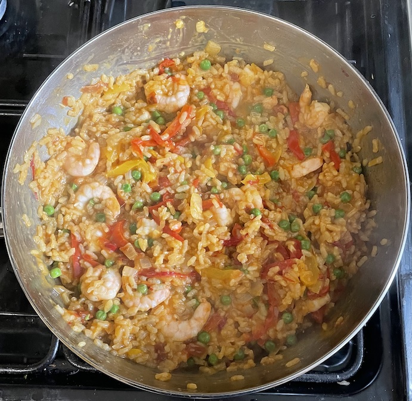
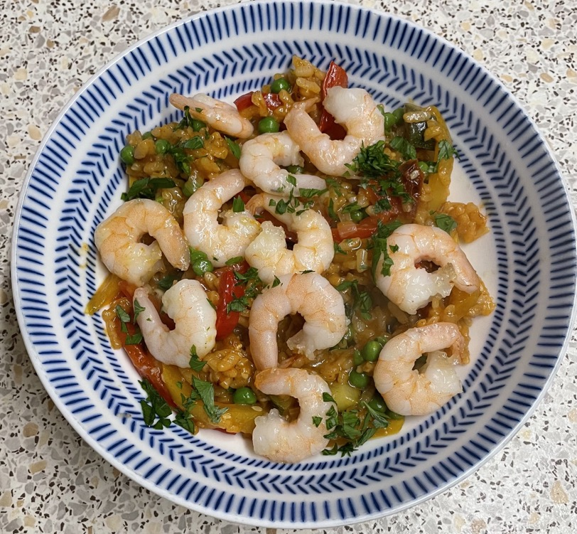

Paella
- Heat for 10 mins
- olive oil
- 1 onion chopped
- 1 red pepper sliced
- 1 yellow pepper sliced
- Add and cook for 2 mins
- Add and mix well
- 250g paella rice
- large pinch of saffron
- 1 tsp sweet smoked paprika
- 1 tsp paprika
- ¼ tsp mild chilli powder
- Add and simmer for 25 mins until rice is cooked
- 750ml stock (53g concentrated stock)
- 3 sun-dried tomatoes soaked & blitzed
- Mix in
- Add
Serving
Notes
- Made: 22 Jul 2023
- Cook prawns & peas before adding
- Optional veg: artichokes, corgette
- Optional: chorizo, clams, mussels, cooked seafood mix
Pics

